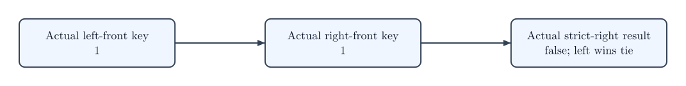
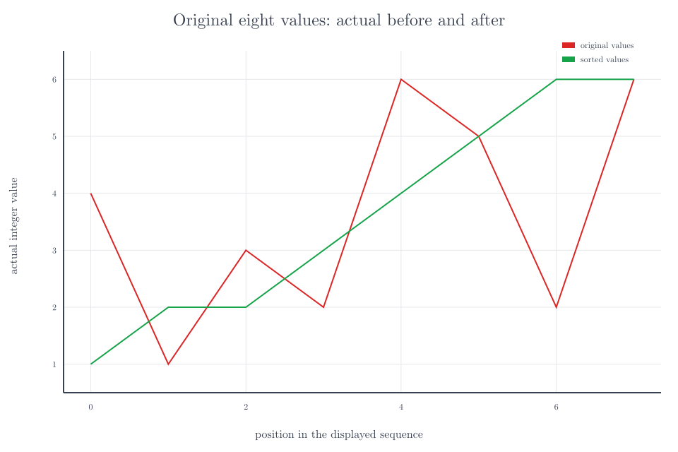
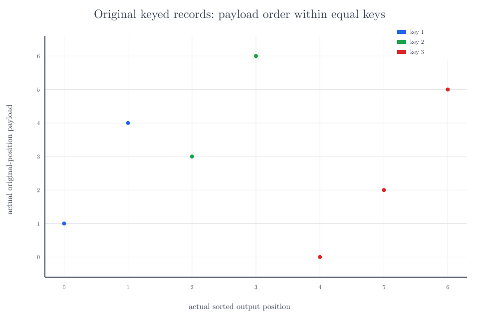
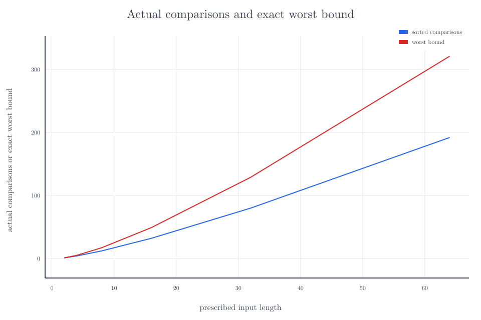

Stable merge sort
Abstract
Sorting records by a key should preserve the input order of records whose keys are equal when stability matters. Merge sort splits balanced ranges and merges their sorted children, taking the left front on ties. We expose actual canonical comparisons and writes, retain the original eight values and seven keyed records, and separate variable comparison counts from mandatory merge-copy work.
Derive the stable merge
Use half-open ranges [lo,hi), splitting at lo+floor((hi−lo)/2). A range of length at most one is sorted. Recursively sort both children, then compare their current fronts. Take the right front only if its key is strictly smaller; otherwise take the left front. Drain the remaining run once either child is exhausted. Write every chosen item into a reusable scratch buffer, then copy the complete merged interval back.
At each selection, the smaller remaining front is the least remaining item, so induction proves sorted output. Within a child, items are consumed in their existing order. On equal keys, every left-child item originally preceded every right-child item, so selecting left preserves their cross-child order. Induction from singleton leaves therefore proves stability. Payloads move with items but never enter the comparison.
The canonical implementation serves the integer sort, keyed-pair sort, analysis and trace APIs. The report contains no second instrumented sort. Captured comparisons and both kinds of writes are actual producing operations.
A tiny real equal-key decision
Use keyed records(2,0),(1,1),(2,2),(1,3), where the second field is an observable payload. The real merge encounters equal fronts; strict right-before-left is false, so left wins. The output table retains the actual moved payloads.
#include <dm/dm.hpp>
int main() {
std::filesystem::create_directories("build");
auto t =
dm::algorithms::merge_sort_pairs_trace({{2, 0}, {1, 1}, {2, 2}, {1, 3}});
auto tie =
std::find_if(t.comparisons.begin(), t.comparisons.end(), [](auto &c) {
return c.left_key == c.right_key;
});
std::print("| actual sorted position | actual key | actual carried payload |\n| ---: | ---: | ---: |\n");
for (std::size_t i = 0; i < t.output.size(); ++i)
std::print("| {} | {} | {} |\n", i, t.output[i].key, t.output[i].tag);
dm::graphics::Diagram d;
d.node("left", {0, 0},
std::format("Actual left-front key\n{}", tie->left_key)).node(
"right", {6, 0},
std::format("Actual right-front key\n{}", tie->right_key)).node(
"choice", {12, 0},
std::format("Actual strict-right result\n{}; left wins tie",
tie->take_right)).edge("left", "right").edge("right",
"choice");
d.save_svg("build/merge_sort_tiny.svg");
}| actual sorted position | actual key | actual carried payload |
|---|---|---|
| 0 | 1 | 1 |
| 1 | 1 | 3 |
| 2 | 2 | 0 |
| 3 | 2 | 2 |

Original eight values and producing work
Retain4,1,3,2,6,5,2,6. Every captured output tag is the original position carried through actual moves; equal2 and6 values retain increasing original indices. The comparison count is input dependent. The scratch and copyback writes are not inferred from a separate simulation.
#include <dm/dm.hpp>
int main() {
std::filesystem::create_directories("build");
auto t =
dm::algorithms::merge_sort_trace(dm::algorithms::merge_sort_demo_values());
std::print("| actual sorted position | actual value | actual original index |\n| ---: | ---: | ---: " "|\n");
std::vector<double> x, before, after;
for (std::size_t i = 0; i < t.output.size(); ++i) {
std::print("| {} | {} | {} |\n", i, t.output[i].key, t.output[i].tag);
x.push_back(i);
before.push_back(t.input[i].key);
after.push_back(t.output[i].key);
}
std::print("\n| actual selected operation | count |\n| --- | ---: |\n| comparisons | {} |\n| scratch " "writes | {} |\n| copyback writes | {} |\n| completed merges | {} |\n| worst-case comparison " "bound | {} |\n",
t.work.comparisons, t.work.scratch_writes, t.work.copy_writes,
t.work.merges,
dm::algorithms::merge_sort_comparison_bound(t.input.size()));
auto p = dm::graphics::RPlot::create();
p.line(x, before, "original values");
p.line(x, after, "sorted values", {22, 163, 74});
p.x_label("position in the displayed sequence").y_label(
"actual integer value").title("Original eight values: actual before and after").save_svg("build/merge_sort_original.svg");
}| actual sorted position | actual value | actual original index |
|---|---|---|
| 0 | 1 | 1 |
| 1 | 2 | 3 |
| 2 | 2 | 6 |
| 3 | 3 | 2 |
| 4 | 4 | 0 |
| 5 | 5 | 5 |
| 6 | 6 | 4 |
| 7 | 6 | 7 |
| actual selected operation | count |
|---|---|
| comparisons | 15 |
| scratch writes | 24 |
| copyback writes | 24 |
| completed merges | 7 |
| worst-case comparison bound | 17 |

Original keyed records: stability is observable
The retained original records are(3,0),(1,1),(3,2),(2,3),(1,4),(3,5),(2,6). Their payloads are input positions. Sorting by key yields key1 tags1,4; key2 tags3,6; key3 tags0,2,5. Those are original order within each key group, even though the complete tag sequence is not sorted. General payload values need not be increasing: stability preserves their prior order rather than sorting the payload numerically.
#include <dm/dm.hpp>
int main() {
std::filesystem::create_directories("build");
auto t =
dm::algorithms::merge_sort_pairs_trace(dm::algorithms::merge_sort_demo_pairs());
std::print("| actual sorted position | key | actual original-position payload |\n| ---: | ---: | ---: " "|\n");
for (std::size_t i = 0; i < t.output.size(); ++i)
std::print("| {} | {} | {} |\n", i, t.output[i].key, t.output[i].tag);
auto p = dm::graphics::RPlot::create();
for (std::int64_t key : {1, 2, 3}) {
std::vector<double> x, y;
for (std::size_t i = 0; i < t.output.size(); ++i)
if (t.output[i].key == key) {
x.push_back(i);
y.push_back(t.output[i].tag);
}
p.points(x, y, std::format("key {}", key),
key == 1 ? dm::graphics::RGB{37, 99, 235} : key == 2
? dm::graphics::RGB{22, 163, 74}
: dm::graphics::RGB{220, 38, 38});
}
p.x_label("actual sorted output position").y_label("actual original-position payload").title("Original keyed records: payload order within equal keys").save_svg("build/merge_sort_stability.svg");
}| actual sorted position | key | actual original-position payload |
|---|---|---|
| 0 | 1 | 1 |
| 1 | 1 | 4 |
| 2 | 2 | 3 |
| 3 | 2 | 6 |
| 4 | 3 | 0 |
| 5 | 3 | 2 |
| 6 | 3 | 5 |

Bound comparisons and account for every write
Merging two nonempty runs of total length m uses at most m−1 key comparisons, but always m scratch writes and m copyback writes. Every child split is balanced independently of input values. The worst comparison recurrence and its closed form are:
Take W(0)=W(1)=0. The bound is attainable, but sorted or reverse input is not automatically a worst-case witness. Summing mandatory merged lengths gives W(n)+n−1 writes in each phase for n>=1. Therefore total time is Theta(n log n) on every input for this implementation without presorted-run shortcuts, despite differing comparison counts. Buffer storage is O(n), recursion depth O(log n), and returned/captured copies add their separately stated storage.
The bound helper computes integer ceil-log2 and checked wide arithmetic, throwing if the result cannot fit size_t. Ordinary counters also reject wrap. Optional capture counts two owned N-item endpoints and every actual comparison/write/commit record. Default cap one million; zero disables it. Endpoint admission precedes copying, then each real record is admitted before its operation. Fields, capacities, scratch/runtime storage and bytes are excluded. Complete history uses O(n log n) records; a quota failure returns no prefix.
#include <dm/dm.hpp>
int main() {
std::filesystem::create_directories("build");
std::vector<double> x, observed, bound;
std::print("| prescribed n | actual sorted-input comparisons | actual reverse-input comparisons | worst " "comparison bound | actual scratch writes per run | actual copyback writes per run |\n| ---: " "| ---: | ---: | ---: | ---: | ---: |\n");
for (std::size_t n : {2, 4, 8, 16, 32, 64}) {
std::vector<std::int64_t> input(n);
std::iota(input.begin(), input.end(), 0);
auto a = dm::algorithms::merge_sort_analyze(input);
std::reverse(input.begin(), input.end());
auto b = dm::algorithms::merge_sort_analyze(input);
auto w = dm::algorithms::merge_sort_comparison_bound(n);
std::print("| {} | {} | {} | {} | {} | {} |\n", n, a.work.comparisons,
b.work.comparisons, w, a.work.scratch_writes,
a.work.copy_writes);
x.push_back(n);
observed.push_back(a.work.comparisons);
bound.push_back(w);
}
auto p = dm::graphics::RPlot::create();
p.line(x, observed, "sorted comparisons", {37, 99, 235});
p.line(x, bound, "worst bound", {220, 38, 38});
p.x_label("prescribed input length").y_label("actual comparisons or exact worst bound").title("Actual comparisons and exact worst bound").save_svg("build/merge_sort_work.svg");
}| prescribed n | actual sorted-input comparisons | actual reverse-input comparisons | worst comparison bound | actual scratch writes per run | actual copyback writes per run |
|---|---|---|---|---|---|
| 2 | 1 | 1 | 1 | 2 | 2 |
| 4 | 4 | 4 | 5 | 8 | 8 |
| 8 | 12 | 12 | 17 | 24 | 24 |
| 16 | 32 | 32 | 49 | 64 | 64 |
| 32 | 80 | 80 | 129 | 160 | 160 |
| 64 | 192 | 192 | 321 | 384 | 384 |

Verification and references
Native tests enumerate every ternary-key sequence through length seven, verify
sorted values and stable original identities, compare keyed payloads with an
independent stable reference, and replay every real comparison, scratch write,
copyback write and merge commit from owned input. Every distinct permutation
through length seven attains the closed-form maximum over the exhaustive set.
Original15 comparisons/24 writes per phase, full-width integer keys, nonmonotone
payloads, empty/singleton cases, exact quotas and ownership are checked. The
shared ten-report batch passes 71 CTest cases, 29 directly instrumented
ASan/UBSan cases, 130 compiled and executed public examples, 598/598 scoped
documentation definitions and ten representative hovers. Independent Python
arbitrary-precision, hashlib, sorted-window, RNG, polynomial, graph and
full-assignment references verify 224,229 actual records. Frozen comparisons
preserve ordinary legacy outputs, including selected clique identities, original
density graphs and memetic partitions. Twelve checkout headers and twelve
identically installed headers compile independently; an installed-header native
consumer links and runs. All four complete programs and all four native figures
pass execution and visual review, and HTML/Markdown exports preserve computed
results and identical image bytes. Receipts:
build/mepml-conversion/batch-224-233/.
See Knuth, The Art of Computer Programming, Volume3: Sorting and Searching, for merging and merge sort. The stability proof, actual tie convention and exact balanced-tree count are derived here. The report distinguishes actual canonical execution from theory and does not substitute a second sorting implementation for measured results.